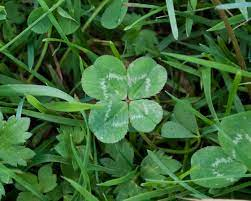

Diseases and Mutations
The most common thing you will see in abnormal clover is one with four or more leaves. Normally, a clover plant has only three leaves. This little mutation is generally a factor of its dna. Four leafed clovers are often a recessive gene, and if you look around where you found one, you would most likely find more. One patch of clover all have the same genes, meaning theres likely more than one with a small abnormity in its dna structure. Chlorosis is something you might see quite often in clover. Chlorosis is the absence of chlorophyll, which is what gives your plants that green color. A telling sign that your clover has Chlorosis would be the white or yellowing leaves or stems. A fix for this would be the use of chelates in the spring. Black Spot is very common on not just clover, but almost every plant in existence. This is a fungal disease that forms on the upper sides of leaves. You can recognize this by the dark spots that appear to be rot on the leaves. Black Spot is an issue during extended periods of wet weather or for when leaves are wet for more that 6 hours. Keep your clover in well drained soil and try not to overwater them. When you water, apply water directly to roots.
